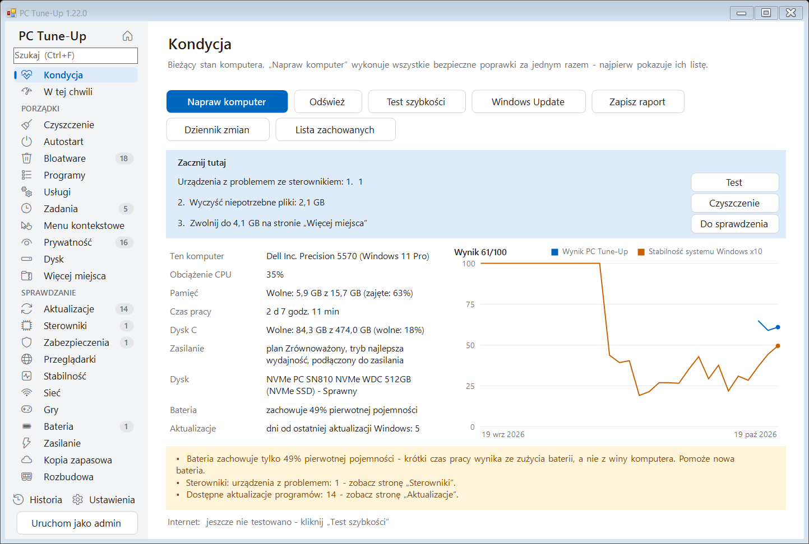
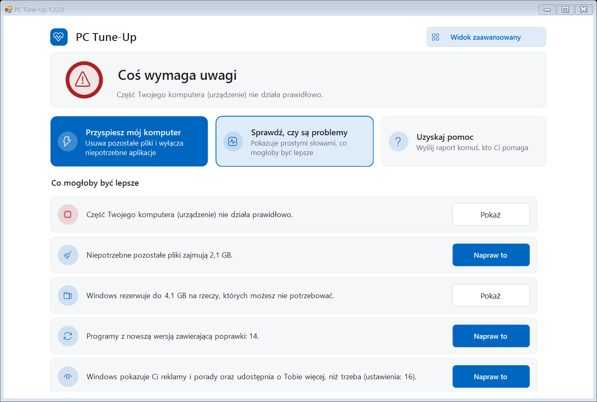
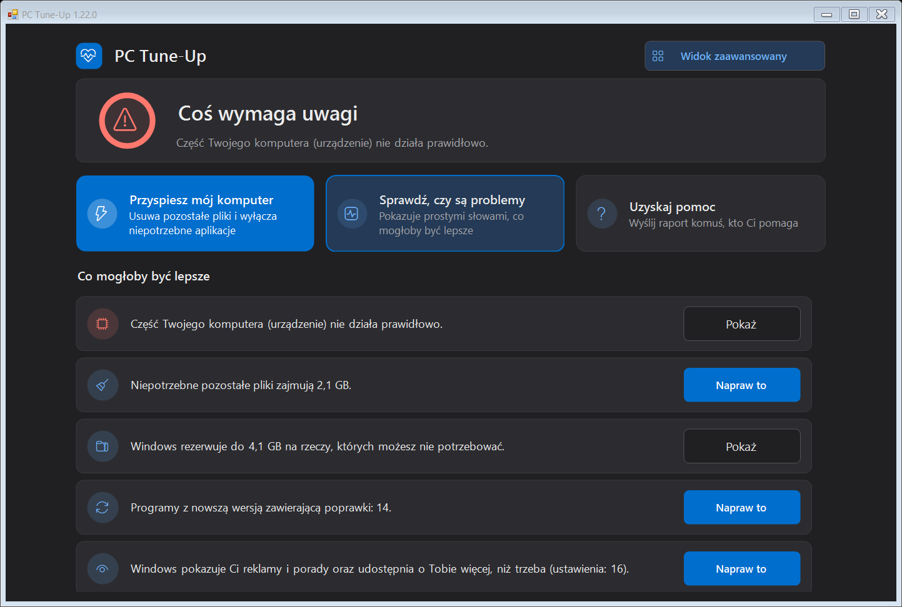
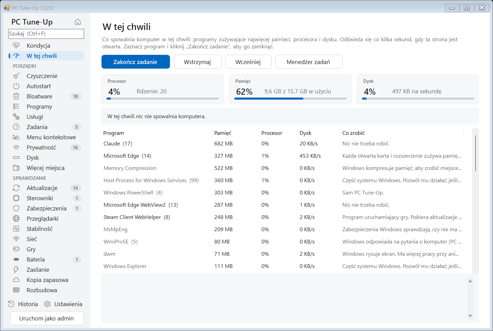
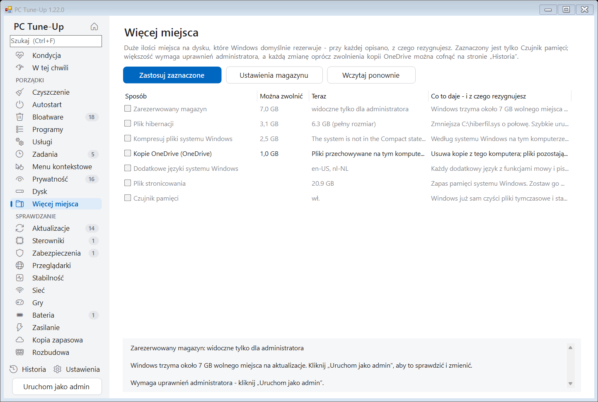
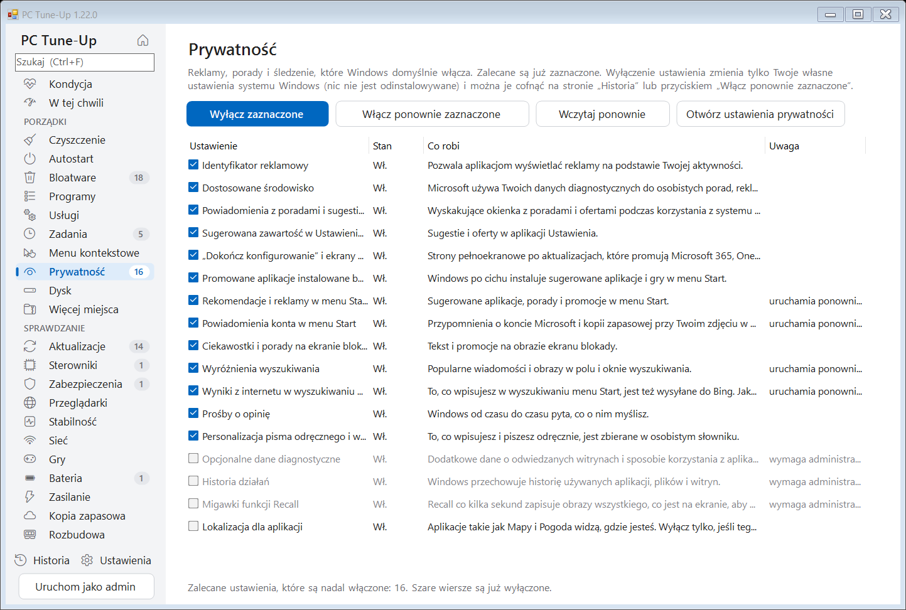
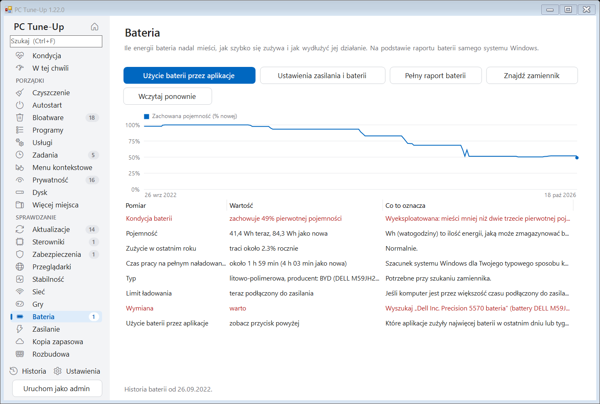
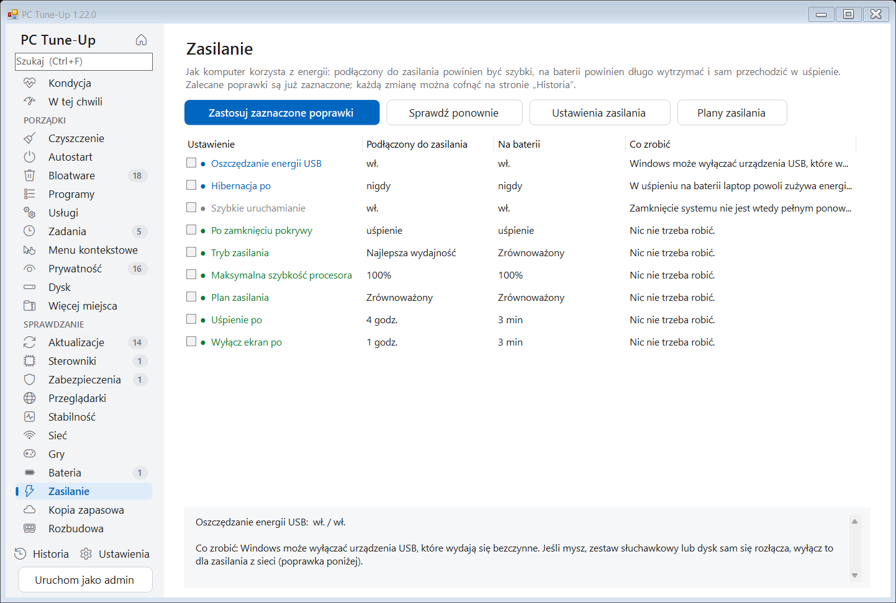
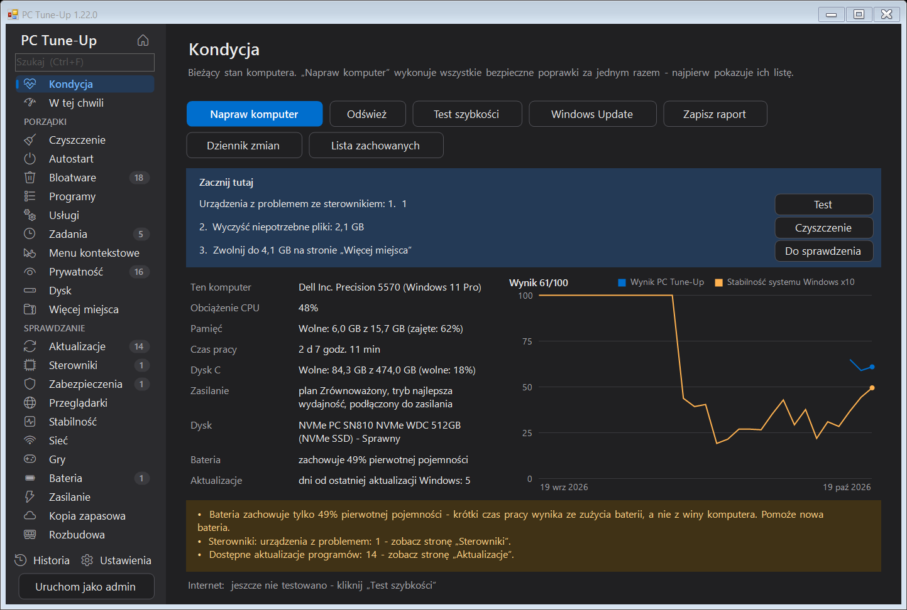

Sprawdź, wyczyść i przyspiesz każdy komputer z Windows.
PC Tune-Up znajduje to, co spowalnia komputer, wyjaśnia to prostym językiem i naprawia jednym kliknięciem - a każdą zmianę można cofnąć.
Darmowy i open source (MIT). Windows 10 i 11. Po polsku, angielsku, niderlandzku, niemiecku, francusku, hiszpańsku i włosku. Bez konta, bez reklam.

Wszystko w jednym miejscu
To, co sprawdziłby serwisant komputerowy, na 25 stronach, które przeszukasz klawiszami Ctrl+F - oraz pole „Zacznij tutaj”, które podpowiada, które trzy rzeczy są teraz najważniejsze.
Śmieci i miejsce na dysku
Pliki tymczasowe, zrzuty awaryjne, pamięć podręczna przeglądarek i pozostałości po Windows. Duże pliki i duplikaty. Sposoby na więcej miejsca, takie jak plik hibernacji i kopie z OneDrive.
Autostart i bloatware
Aplikacje uruchamiane razem z Windows, preinstalowane śmieci od dowolnego producenta komputera, nieużywane programy, usługi działające w tle i zaplanowane zadania.
Prywatność i menu
Reklamy, porady i śledzenie w Windows wyłączane jedno po drugim. Ukrywanie pozostałych po programach pozycji w menu kontekstowym.
W tej chwili
Co spowalnia komputer w tym właśnie momencie: procesor, pamięć i dysk, korzystające z nich programy opisane prostymi słowami oraz przycisk Zakończ zadanie, aby któryś zamknąć - a do tego, jak bardzo pamięć była zapełniona w ostatnich 7 dniach.
Aktualizacje i sterowniki
Nieaktualne programy aktualizowane przez winget, urządzenia z problemami ze sterownikami i wiek najważniejszych sterowników.
Zabezpieczenia i przeglądarki
Wsparcie dla Twojej wersji Windows, antywirus, zapora, szyfrowanie, Secure Boot - oraz rozszerzenia przeglądarek, wymuszone ustawienia, plik hosts i sztuczki z serwerem proxy, które wyglądają na adware.
Awarie i stabilność
Awarie, zawieszenia i niebieskie ekrany z ostatnich 30 dni, pogrupowane według prawdziwej przyczyny, z poprawkami jednym kliknięciem.
Sieć i gry
Sygnał Wi-Fi, opóźnienia, szybkość DNS i zerwania połączenia. Której karty graficznej naprawdę używa Twoja gra i co jeszcze ją spowalnia.
Bateria i zasilanie
Jak bardzo zużyta jest bateria i gdzie producent komputera ukrył limit ładowania do 80%. Tryb zasilania, uśpienie, ekran i pokrywa: szybko po podłączeniu do prądu, oszczędnie na baterii.
Kopia zapasowa i rozbudowa
Czy Twoje pliki przetrwałyby awarię lub kradzież komputera. Jakie rozszerzenia pamięci, dysku i baterii pasują do tego konkretnego komputera i czy warto je kupić.
Zaprojektowany z rozwagą
Program do ulepszania komputera nigdy nie powinien niczego pogorszyć.
- ✓Każda zmiana jest zapisana na stronie Historia i prawie każdą można cofnąć jednym kliknięciem.
- ✓Program najpierw pyta i dokładnie pokazuje, co zrobi. Nic dużego nie jest zaznaczone z góry.
- ✓Widok prosty dla tych, którzy nie potrzebują szczegółów: jeden spokojny ekran, stan opisany prostymi słowami, trzy duże przyciski i tylko bezpieczne poprawki - oraz przycisk do wysłania raportu członkowi rodziny, który zwykle pomaga. Jedno kliknięcie w Widok zaawansowany pokazuje wszystkie narzędzia.
- ✓Oprogramowanie zabezpieczające, sieci VPN, sterowniki i bazy danych nigdy nie są ruszane, a własne programy możesz dodać do listy zachowanych.
- ✓Z uprawnieniami administratora przed większymi zmianami tworzy punkt przywracania systemu Windows.
- ✓Opcjonalna cotygodniowa konserwacja sama usuwa śmieci i powiadamia Cię tylko wtedy, gdy pojawi się coś nowego.
- ✓Gdy Napraw komputer skończy, pokazuje, co się zmieniło - wolne miejsce, aplikacje uruchamiane z Windows, wynik - przed i po.
- ✓Przypomnienia o sprawach, które czekają zbyt długo - ponowne uruchomienie, na które czeka Windows, odkładane aktualizacje, dawno nierobione porządki - każde z przyciskiem Później.
- ✓Każda nowa wersja jest automatycznie testowana na czystym komputerze z Windows, we wszystkich językach.
Zrzuty ekranu
Jasny i ciemny motyw, zgodnie z ustawieniem Windows.








Instalacja
- Pobierz PC-TuneUp.exe i uruchom go. Program zaproponuje, że sam się zainstaluje - bez uprawnień administratora - i będzie sam się aktualizować.
- Za pierwszym razem Windows może wyświetlić komunikat „System Windows ochronił ten komputer”, ponieważ program nie ma jeszcze podpisu cyfrowego. Kliknij Więcej informacji > Uruchom mimo to.
- Program otworzy się w widoku prostym: kliknij Przyspiesz mój komputer albo napraw pozycje z listy jedną po drugiej. Aby zobaczyć wszystkie narzędzia, kliknij Widok zaawansowany i zacznij od Napraw komputer na stronie Kondycja. Użyj Uruchom jako admin, aby uwzględnić też pliki i ustawienia samego systemu Windows.
Wkrótce także przez winget: winget install MichaelKloprogge.PCTuneUp
Dla działu IT i skryptów
PC-TuneUp.exe /report[:plik.html] sprawdź wszystko i zapisz raport PC-TuneUp.exe /fix wykonaj bezpieczne kroki Napraw komputer bez pytania PC-TuneUp.exe /auto automatyczna konserwacja (porządki, test, powiadomienie) PC-TuneUp.exe /install | /uninstall zainstaluj lub usuń dla bieżącego użytkownika
Zasady podpisywania kodu
Bezpłatne podpisywanie kodu zapewnia SignPath.io, certyfikat wystawia SignPath Foundation.
Każda wersja jest budowana przez GitHub Actions z publicznego kodu źródłowego i publikowana wyłącznie stamtąd. Osoby wprowadzające i przeglądające zmiany: Michael Kloprogge (właściciel projektu). Zatwierdzający każdą podpisaną wersję: Michael Kloprogge.
Prywatność: PC Tune-Up nie wysyła żadnych informacji o Twoim komputerze do innych systemów. Jedyne połączenia sieciowe to sprawdzanie aktualizacji (GitHub), test szybkości uruchamiany przez Ciebie (Cloudflare) i lista programów winget – zobacz „Prywatność” poniżej.
Prywatność
Wszystko działa na Twoim komputerze. PC Tune-Up nie ma kont, śledzenia ani analityki i nie wysyła nigdzie żadnych informacji o Twoim komputerze. Z internetu korzysta tylko do sprawdzania aktualizacji (GitHub), opcjonalnego testu szybkości (Cloudflare) i listy programów winget.
Pełny kod źródłowy jest dostępny na GitHub, więc każdy może sprawdzić, co robi program.